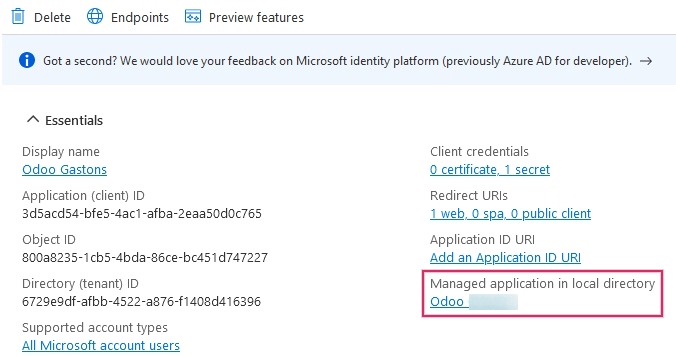
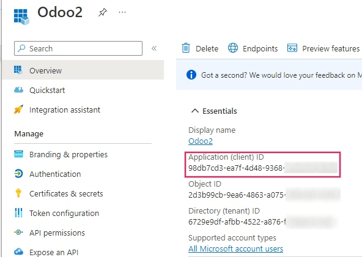
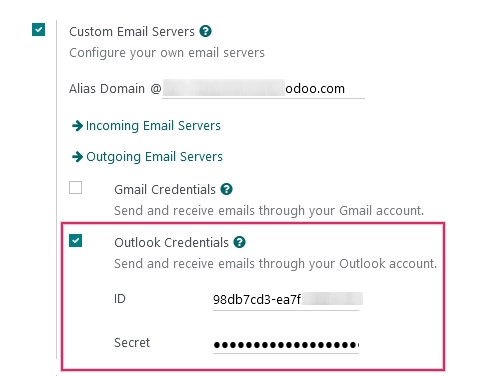
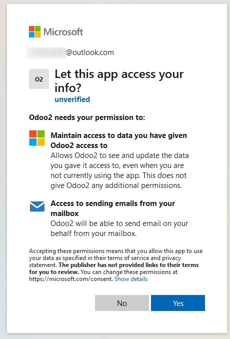

Connect Microsoft Outlook 365 to Odoo using Azure OAuth¶
Odoo is compatible with Microsoft’s Azure OAuth for Microsoft 365. In order to send and receive secure emails from a custom domain, all that is required is to configure a few settings on the Azure platform and on the back end of the Odoo database. This configuration works with either a personal email address or an address created by a custom domain.
Setup in Microsoft Azure Portal¶
Create a new application¶
To get started, go to Microsoft’s Azure Portal. Log in with the Microsoft Outlook Office 365 account if there is one, otherwise log in with the personal Microsoft account. A user with administrative access to the Azure Settings will need to connect and perform the following configuration. Next, navigate to the section labeled Manage Microsoft Entra ID (formally Azure Active Directory).
Now, click on Add (+), located in the top menu, and then select App
registration. On the Register an application screen, rename the Name to
Odoo or something recognizable. Under the Supported account types section select
Accounts in any organizational directory (Any Microsoft Entra ID directory - Multitenant)
and personal Microsoft accounts (e.g. Skype, Xbox).
Under the Redirect URL section, select Web as the platform, and then input
https://<odoo base url>/microsoft_outlook/confirm in the URL field. The Odoo base URL
is the canonical domain at which your Odoo instance can be reached in the URL field.
Example
mydatabase.odoo.com, where mydatabase is the actual prefix of the database’s subdomain, assuming it’s hosted on Odoo.com
After the URL has been added to the field, Register the application so it is created.
API permissions¶
The API permissions should be set next. Odoo will need specific API permissions to be able to read (IMAP) and send (SMTP) emails in the Microsoft 365 setup. First, click the API permissions link, located in the left menu bar. Next, click on the (+) Add a Permission button and select Microsoft Graph under Commonly Used Microsoft APIs. After, select the Delegated Permissions option.
In the search bar, search for the following Delegated permissions and click Add permissions for each one:
SMTP.Send
IMAP.AccessAsUser.All
Note
The User.Read permission will be added by default.

Assign users and groups¶
After adding the API permissions, navigate back to the Overview of the Application in the top of the left sidebar menu.
Now, add users to this application. Under the Essentials overview table, click on the link labeled Managed Application in Local Directory, or the last option on the bottom right-hand side of the table.
In the left sidebar menu, select Users and Groups. Next, click on (+) Add User/Group. Depending on the account, either a Group and a User can be added, or only Users. Personal accounts will only allow for Users to be added.
Under Users or Groups, click on None Selected and add the users or group of users that will be sending emails from the Microsoft account in Odoo. Add the users/groups, click Select, and then Assign them to the application.
Create credentials¶
Now that the Microsoft Azure app is set up, credentials need to be created for the Odoo setup. These include the Client ID and Client Secret. To start, the Client ID can be copied from the Overview page of the app. The Client ID or Application ID is located under the Display Name in the Essentials overview of the app.
Next, the Client Secret Value needs to be retrieved. To get this value, click on Certificates & Secrets in the left sidebar menu. Then, a Client Secret needs to be produced. In order to do this, click on the (+) New Client Secret button.
A window on the right will populate with a button labeled Add a client secret. Under
Description, type in Odoo Fetchmail or something recognizable, and then set the
expiration date.
Important
A new Client Secret will need to be produced and configured if the first one expires. In this event, there could be an interruption of service, so the expiration date should be noted and set to the furthest possible date.
Next, click on Add when these two values are entered. A Client Secret Value and Secret ID will be created. It is important to copy the Value or Client Secret Value into a notepad as it will become encrypted after leaving this page. The Secret ID is not needed.

After these steps, the following items should be ready to be set up in Odoo:
A client ID (Client ID or Application ID)
A client secret (Value or Client Secret Value)
This completes the setup on the Microsoft Azure Portal side.
Setup in Odoo¶
Enter Microsoft Outlook credentials¶
First, open the Odoo database and navigate to the Apps module. Then, remove the
Apps filter from the search bar and type in Outlook. After that, install the module
called Microsoft Outlook.
Next, navigate to , and under the Discuss section, ensure that the checkbox for Custom Email Servers is checked. This populates a new option for Outlook Credentials.
Save the progress.
Then, copy and paste the Client ID (Application ID) and Client Secret (Client Secret Value) into the respective fields and Save the settings.
Configure outgoing email server¶
On the General Settings page, under the Custom Email Servers setting, click the Outgoing Email Servers link to configure the Microsoft account.
Then, create a new email server and check the box for Outlook. Next, fill in the Name (it can be anything) and the Microsoft Outlook email Username.
If the From Filter field is empty, enter either a domain or email address.
Then, click on Connect your Outlook account.
A new window from Microsoft opens to complete the authorization process. Select the appropriate email address that is being configured in Odoo.
Then, allow Odoo to access the Microsoft account by clicking on Yes. After this, the page will navigate back to the newly configured Outgoing Mail Server in Odoo. The configuration automatically loads the token in Odoo, and a tag stating Outlook Token Valid appears in green.

Finally, click Test Connection. A confirmation message should appear. The Odoo database can now send safe, secure emails through Microsoft Outlook using OAuth authentication.
Configuration with a single outgoing mail server¶
Configuring a single outgoing server is the simplest configuration available for Microsoft Azure and it doesn’t require extensive access rights for the users in the database.
A generic email address would be used to send emails for all users within the database. For example
it could be structured with a notifications alias (notifications@example.com) or contact alias
(contact@example.com). This address must be set as the FROM Filtering on the server.
This address must also match the {mail.default.from}@{mail.catchall.domain} key combination in the
system parameters.
See also
For more information on the from filter visit: Use a default “From†email address.
Note
The System Parameters can be accessed by activating Developer mode (debug mode) in the menu.
When using this configuration, every email that is sent from the database will use the address of
the configured notification mailbox. However it should be noted that the name of the sender will
appear but their email address will change:

Example
Single outgoing mail server configuration:
Outgoing mail server username (login) =
notifications@example.comOutgoing mail server FROM Filtering =
notifications@example.commail.catchall.domainin system parameters =example.commail.default.fromin system parameters =notifications
User-specific (multiple user) configuration¶
In addition to a generic email server, individual email servers can be set up for users in a database. These email addresses must be set as the FROM Filtering on each individual server for this configuration to work.
This configuration is the more difficult of the two Microsoft Azure configurations, in that it requires all users configured with email servers to have access rights to settings in order to establish a connection to the email server.
Setup¶
Each user should have a separate email server set up. The FROM Filtering should be set so that only the user’s email is sent from that server. In other words, only a user with an email address that matches the set FROM Filtering is able to use this server.
See also
For more information on the from filter visit: Use a default “From†email address.
A fallback server must be setup to allow for the sending of
notifications. The FROM Filtering for this server should have the value of
the {mail.default.from}@{mail.catchall.domain}.
Note
The System Parameters can be accessed by activating Developer mode (debug mode) in the menu.
Important
The configuration for this transactional email server can work alongside an outgoing mass-mailing email server. The FROM Filtering for the mass-mailing email server can remain empty, but it’s require to be added in the settings of the Email Marketing application.
See also
For more information on setting the mass-mailing email server visit Set up different dedicated servers for transactional and mass emails.
Example
Multiple user outgoing mail server configuration:
- User #1 mailbox
Outgoing mail server #1 username (login) =
john@example.comOutgoing mail server #1 FROM Filtering =
john@example.com
- User #2 mailbox
Outgoing mail server #2 username (login) =
jane@example.comOutgoing mail server #2 FROM Filtering =
jane@example.com
- Notifications mailbox
Outgoing mail server #3 username (login) =
notifications@example.comOutgoing mail server #3 FROM Filtering =
notifications@example.com
- System Parameters
mail.catchall.domainin system parameters =example.commail.default.fromin system parameters =notifications
Configure incoming email server¶
The incoming account should be configured in a similar way to the outgoing email account. Navigate to the Incoming Mail Servers in the Technical Menu and Create a new configuration. Check or Select the button next to Outlook Oauth Authentication and enter the Microsoft Outlook username. Click on Connect your Outlook account. Odoo will state: Outlook Token Valid Now Test and Confirm the account. The account should be ready to receive email to the Odoo database.